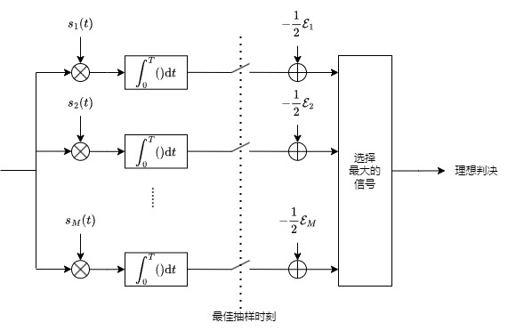

上一篇已经讲了一些这部分的内容了，不过隔了好几个月我都快忘了……
从通信系统的设计角度来说，接收端的复杂程度多是不低于发射端的。
经由发射端调制的信号在信道中传输时会受到各种影响，如何消除影响正确解调是这里要研究的关键问题。
# AWGN 信道 —— 相加 Gaussian 白噪声信道
任何一本概率论的教材应该都会讲到 Gaussian 分布，因而这里就不多叙述。Gaussian 白噪声满足均值为 0 且功率谱密度为
Sn(f)=2N0 (W/Hz)
而 AWGN 信道表明在这个信道中，对信号有影响的仅仅是对信号增加了一个 Gaussian 白噪声。设发送信号为sm(t)，接收信号为r(t)，则可以用r(t)=sm(t)+n(t) 来表述这个信道，其中n(t) 为噪声。
# “最佳接收机”
首先是一个最基本的抽象问题 —— 接收端做了什么？
一个比较数字通信的模型可以把接收端分为两个部分 —— 信号解调和检测判决。
信号解调是将接收到的信号转换为一个矢量的形式（向量化）：
r(t)⇒r=[r1,r2,...,rN]
向量化，一个深刻的问题
这里，我们需要把接收信号r(t) 进行向量化 —— 这看起来是一个简单的过程，至少对于sm(t) 来说是的。
进行数字调制的时候，我们采用的就是一个向量化的方式进行调制，很显然，我们比较容易可以用一组完备正交基来分解这个sm(t)：
{ϕi(t):1≤i≤N}
我们将接收信号对这组正交基进行投影：
rism,ini=<r(t);ϕi(t)>=<sm,i(t);ϕi(t)>=<r(t);ϕi(t)>=∫0Tr(t)ϕi∗(t)dt=∫0Tsm,i(t)ϕi∗(t)dt=∫0Tni(t)ϕi∗(t)dt
这样子有ri=sm,i+ni，既然噪声满足 Gaussian 分布，其数学期望为 0，有
E[ni]=E[∫0Tn(t)ϕi∗(t)dt]=0
其能量满足：
E[∣ni∣2]=E[∫0Tn(t)ϕi∗(t)dt∫0Tn(t)ϕi∗(t)dt]=∫0T∫0TE[n(t)n∗(τ)]ϕi∗(t)ϕi(τ)dtdτ=∫0T∫0T2N0δ(t−τ)ϕi∗(t)ϕi(τ)dtdτ=2N0∫0Tϕi∗(τ)ϕi(τ)dτ=2N0
可见 Gaussian 噪声在各个基底上也是满足其性质的。
但是问题在于，噪声n(t) 并不能够被{ϕi(t)} 完备地分解，也就是存在一个n~(t)，有：
n(t)=i=1∑Nni(t)ϕi(t)+n~(t)
但是，不难发现，n~(t) 和∑i=1Nni(t)ϕi(t) 是正交的，其和sm(t) 也是正交的 —— 否则其中就存在分量能够被ϕi(t) 表示。
这样，n~(t) 部分便可以被利用正交的性质分离出去 —— 换句话说，这个部分不会影响信号的检测。
检测判决则是输入这个信号矢量，去估计（estimate）发送端传输过来的数据m^：
[r1,r2,...,rN]⇒m^
这样子，我们给出了接收机做了什么。回过头来看标题 ——AWGN 信道的最佳接收机 —— 那么，何为最佳？
最简单的解释就是，这个接收机给出的m^ 错误的概率是最低的。
# 最佳判决函数
不少时候估计会混淆s、s和s 的表述，请注意自行甄别：(。
大部分时候s 和s是等价的，而对于这里的接收机，一般处理的都是一个矢量。
如果接收机输入的是s，较大概率是我敲错了。
我们的接收机要进行一个检测的操作，我们不妨用数学的语言来表述：
g(r)=m, if r∈Dm
这里的Dm 被称为判决域（decision region)，判决函数g(r)（decision function）输入接收矢量，输出一个判断的结果。
为了防止你忘掉，我们来一些小小的概率论震撼
在描述事件发生的概率时，我们可以使用先验概率和后验概率的概念。
先验概率指的是在实验进行前就能够得到的事件概率，例如我们已经知道了事件 A 发生的概率是P(A)，扔骰子大失败 1d20=1 的概率是 1/20，硬币投到正面的概率为 1/2，这些依靠我们的先验知识就能够得到。
而后验概率则是在知道结果 B 发生之后，反推原因 A 发生的概率P(A∣B)，例如 1d20 检定 DC=10 失败的情况下问投到 2 的概率是多少。
这样子，我们能够用 Bayes 公式来进行先验概率和后验概率之间的转换：
Pr{A∣B}=Pr{B}Pr{A}Pr{B∣A}
那么判断的正确率就是输出的符号m 正好是发送的符号的概率：
Pc=m=1∑MPr{sm sent}∫Dmf(r∣sm)dr(2.2.1)
这里的Pr{sm sent} 是发送端传输符号sm 的概率（这是一个先验概率），而f(r∣sm) 则对应了在发送端传输了符号sm 的情况下，接收端收到符号r 的概率（这叫做似然函数）。
利用 Bayes 公式，我们能够将其化为后验概率的形式：
Pc=m=1∑M∫Dmf(r)Pr{sm sent∣r received}dr(2.2.2)
# 最大后验概率接收机和最大似然概率接收机
利用上面的公式(2.2.1)，我们可以实现一个错误率最低的判决函数：
gopt(r)=1≤m≤MargmaxPr{sm sent∣r received}
也就是说，我们的判决函数选择的码字，是收到了消息r 的情况下发送端最有可能发送的码字。这个判决函数要求我们选择使得后验概率最大的码字，这种接收机就是最大后验概率 (maximum a posterori probability, MAP) 接收机。
MAP 接收机满足错误率最低的条件，因此它算是 “最佳接收机”。然而，在实践中，MAP 接收机一般是难以实现的 ——MAP 的条件要求我们知道每个接受符号和发送符号对应的后验概率，这要求我们对信道状态、发送信息等内容都要有深入的知识 —— 在实践中这是难以完成的。
利用公式(2.2.2)，我们则可以考虑另一种情况，如果发送的各个符号都是等概率的（即Pr{sm}=1/M），有
gML(r)=1≤m≤Margmaxf(r∣sm)
这里则是采用了寻找m，使得发送sm 的情况下，收到r 的概率最高。如上面所说，这里使用的是使得似然函数最大的码字，因此这被称为最大似然 (maximum likelihood) 接收机。最大似然接收机要求发送的各个符号概率是一定的，这样子才满足最佳的特性 —— 这是由上面的推导决定的 —— 这也是通信系统尽可能希望发送符号 “等概率” 的原因之一。
# 最佳 —— 错误率的衡量
我们已经讲了，“最佳接收机” 使得接收的正确率最高 / 错误率最低。那么如何衡量错误的概率？
对于数字通信系统来说，调制之后的消息是按照符号而不是逐比特发送的，整个系统的转换过程大约是这样：
k−bit infomation⟶M=2k Modulated Signal sm⟶r⟶s^=sg(r)⟶k−bit recovering information
显然我们可以用符号错误的概率和比特错误的概率来衡量错误的概率。
符号错误率 (symbol error rate, SER) 对应了发送了某一个符号，接收端判断的符号和发送的符号不一致的概率：
Pe=m=1∑MPmPr{g(r)=m∣sm sent}=m=1∑MPmm′=m∑∫Dm′f(r∣sm)dr
而比特错误率 (bit error rate, BER) 则对应了接收到的比特和发送的比特不同的概率。相较于 SER，BER 是一个宽松一些的衡量标准 —— 符号错误并不意味着所有的比特都是错误的，例如 16-QAM 符号 1111 被错误识别成了 1110，尽管符号错误了，但是仍然有三个比特是正确的。
设发送的码字各个比特为bi∈{0,1}，对于接收机对某个比特的判断l，其后验概率：
Pr{bi=l∣r}=sm:bi=l∑Pr{sm∣r}
这里求和的条件标注了sm:bi=l，这是指无论符号是否错误，对应的比特还是正确的。利用这条修改过的后验概率，我们能够得到针对比特错误情况的 MAP 判决函数：
gMAPi(r)=l∈{0,1}argmaxsm:bi=l∑Pr{sm∣r}
下面我们给出比特错误率的数学定义，考虑某个比特bi 的判决域：
Bi,0Bi,1={r∈RN:gMAPi(r)=0}={r∈RN:gMAPi(r)=1}
那么比特错误的概率就是判断函数落入了相反比特的判决域里：
Pb,i=l∈{0,1}∑sm:bi=l∑Pr{sm sent}∫Bi,1−lf(r∣sm)dr
考虑多个比特错误的情况，平均比特错误率可以用下面的式子表示：
Pb=k1i=1∑kPb,i
怎么样理解平均 BER？我们考虑一个随机的错误比特数e，平均 BER 就是Pb=k1E[e]=k1E[∑i=1kei]=k1∑i=1kE[ei]=k1∑i=1kPb,i。
我们可以用朴素的自然观念来理解 BER 和 SER 之间的关系，如果符号有k 个比特，那么有：
Pb≤Pe≤kPb
证明过程
这是一个比较工程的证明，包含了一些不太数学的推导。
Pb==k1i=1∑kPr[bi=bi^]1−k1i=1∑kPr[bi=bi^]
显然，我们注意到：
Pr[bi=bi^]≥Pr[(b1,b2,...,bk)=(b1^,b2^,...,bk^)]
利用该不等式进行放缩，得到：
Pb≤==1−k1i=1∑kPr[(b1,b2,...,bk)=(b1^,b2^,...,bk^)]Pr[(b1,b2,...,bk)=(b1^,b2^,...,bk^)]Pe
这样，不等式左半边得证。我们还能注意到，符号错误率是小于等于每一个比特都错误的概率的，也就是
Pe≤i=1∑kPr[bi=bi^]
考虑每个比特的错误都是独立事件，有
Pe≤i=1∑kPr[bi=bi^]=k(k1i=1∑kPr[bi=b^i])=kPb
不等式右半边得证。
# 更进一步，对最佳接收机的考量
下面让我们走近一步来分析最佳接收机的判决方式。
我们设传输系统为r(t)=sm(t)+n(t)，利用标准正交基进行向量化，得到：
r=sm+n
噪声的平均能量为E[ni2]=N0/2，概率分布函数f(n) 为
f(n)=(2π(N0/2)1)N⋅exp(−2(N0/2)∣∣n∣∣2)
此时最佳判决为
gopt(r)=1≤m≤NargmaxPmf(r∣sm)=1≤m≤Nargmax[Pm⋅(πN01)2⋅exp(−N0∣∣r−sm∣∣2)]=1≤m≤Nargmax[log(Pm)−N0∣∣r−sm∣∣2]
注意第二步中红色部分为一个恒为正的常数，其对于argmax 并没有贡献，因此将其消去。从第二步到第三步时对argmax 的参数取自然对数，由于自然对数单调的性质，其对argmax 没有影响。
将等式乘以N0/2，得到
gopt(r)=1≤m≤Nargmax[2N0logPm−21∣∣r−sm∣∣2](3.1.1)
展开平方项，得到
gopt(r)=1≤m≤Nargmax[2N0logPm−21∣∣r∣∣2+rTsm−21Em]=1≤m≤Nargmax[2N0logPm+rTsm−21Em](3.1.2)
其中红色部分不含m，和上面类似，对argmax 没有贡献，因此将其消去。
这样得到的式(3.1.2) 即为 MAP 判决准则：
MAP 判决准则
m^=1≤m≤Nargmax[2N0logPm+rTsm−21Em]=1≤m≤Nargmax[bias termηm+correlationrTsm]
令偏置项ηm=2N0logPm−21Em，MAP 判决准则包含了该偏置项和rTsm。实际上后者就是接收向量和发送向量的相似程度，这也符合前面提到的最大似然概率的概念。
回到上面的式(3.1.1)，如果满足等概率的条件（Pm=1/N），我们便可以把Pm 从argmax 中消去，由此得到了最大似然判决的准则：
ML 判决准则
m^===1≤m≤Margmax[2N0logm1−21∣∣r−sm∣∣2]1≤m≤Margmin∣∣r−sm∣∣21≤m≤Margmin∣∣r−sm∣∣
这样，我们发现，ML 判决实际上就是寻找距离接收向量最近的发送向量，或者是可以称之为最小距离判决。
考虑发射信号为等概率、等能量的话，便可以进一步简化 ML 判决准则，得到：
m^=1≤m≤MargmaxrTsm
这甚至允许我们直接对信号进行相关操作就能计算，跳过向量化的步骤：
rTsm=∫0Tr(t)sm(t)dt
# ML 接收机的设计思路
前面提到了，尽管有着最优的性质，但 MAP 接收机工程中难以实现，因此一般使用的都是 ML 接收机。
考虑等概率的信号，ML 接收机的判断准则
m^====1≤m≤Margmin∣∣r−sm∣∣21≤m≤Margmin(∣∣r∣∣2−2rTsm+∣∣sm∣∣2)1≤m≤Margmax(2rTsm−∣∣sm∣∣2)1≤m≤Margmax(inner product/projection∫0Tr(t)sm(t)dt−Energy compersation21∫0T∣sm(t)∣2dt)
对于m∈{1,2,...,M}，ML 接收机结构如下图所示：
